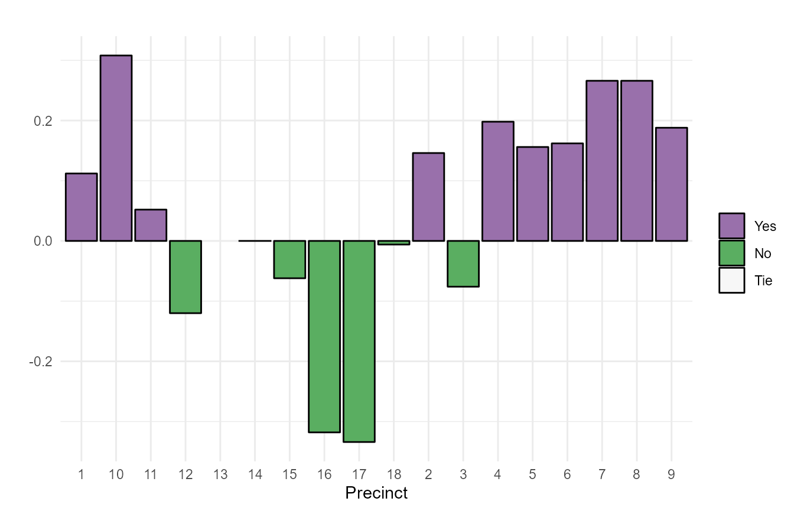
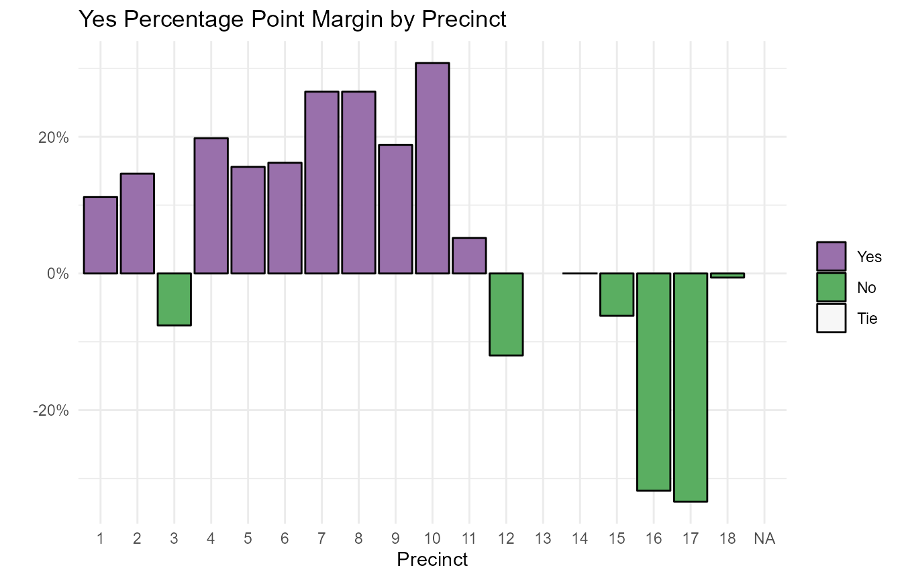
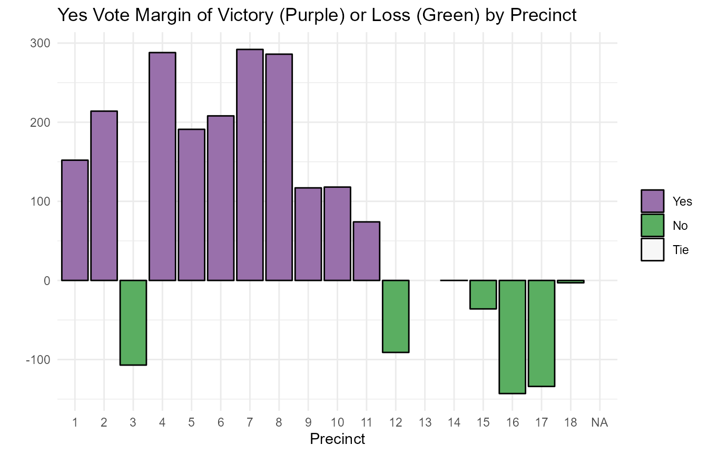
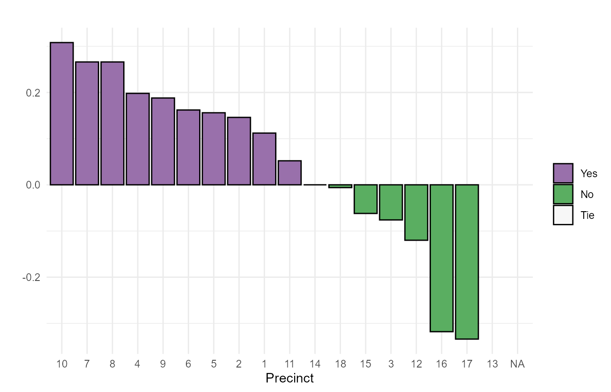

library(elections2) #> Loading required package: ggplot2 #> Loading required package: leaflet
It’s certainly easy enough to use ggplot2 and create graphs with election results generated by wrangle_results() or wrangle_more_cols(). However, I’ve done the same types of election bar graphs for many years now; and it was quicker to create a functions instead of repeating the same general code over and over. Check it out and see if it might help you as well.
To create a bar graph with this package’s bargraph_of_margins() function, first wrangle some election results with the wrangle_results() or wrangle_more_cols() function:
The resulting data frame will include a Total row, which you wouldn’t want in a bar graph, but bargraph_of_margins() removes it as long as it’s still called Total in the first column.
I find it useful to decide my color scheme at the outset. In the U.S., Democrats as blue and Republicans as red is a well-known convention – and worth avoiding in the U.S. for other types of elections such as primaries or ballot questions.
You can define your own palette colors or use the default purple and green.
Palettes can be defined manually with specific colors. In that case, set the brewer_palette argument to FALSE. If you want to use an RColorBrewer palette by name or number, set brewer_palette to TRUE and choose an RColorBrewer palette by name or number in the palette argument.
Then it’s as simple as running bargraph_of_margins() on your data frame, adding the name of your election district column not in quotation marks as well as the name of the column you want to graph. I suggest either the percent margin column (in the format Winner_Pct_Margin) or vote margin column (in the format Winner_Margin).
bargraph_of_margins(election_df = my_election_data, Precinct, Yes_Pct_Margin)

This function returns a ggplot object.
If, as in this example, your election districts are numbers showing up as characters that are sorting like 1, 10, 11, etc., you can sort them as numbers without converting them to numbers by changing the column to an ordered factor. This code works:
my_election_data$Precinct <- factor(my_election_data$Precinct, levels = c("1", "2", "3", "4", "5", "6", "7", "8", "9", "10", "11", "12", "13", "14", "15", "16", "17", "18"), ordered = TRUE)
If you don’t want to write out your levels manually, use the gtools package’s mixedsort() function.
my_election_data$Precinct <- factor(my_election_data$Precinct, levels = gtools::mixedsort(my_election_data$Precinct), ordered = TRUE)
If you’d like to use tidyverse syntax with dplyr for the above task, load dplyr into your working session and run code something like:
my_election_data <- my_election_data %>% mutate( Precinct = factor(Precinct, levels = gtools::mixedsort(Precinct), ordered = TRUE) )
You can change the ggplot2 theme with the bargraph_of_margin() function’s theme argument and add a headline with the headline argument.
If you are familiar with ggplot2, you can add to or tweak the graph object with conventional ggplot2 code as well using arguments available within the bargraph_of_margin() funct. For example, you can change the y axis to show as percents with:
bargraph_of_margins(election_df = my_election_data, Precinct, Yes_Pct_Margin, theme = theme_classic(), headline = "Yes Percentage Point Margin by Precinct") + scale_y_continuous(labels = scales::percent)

Below is an example of using bargraph_of_margins() to plot the margin of victory/loss for the winner in each election district by raw vote totals, as opposed to percentage difference. This code also would add commas to the y axis (although they’re not needed in this case because vote totals are small).
bargraph_of_margins(election_df = my_election_data, Precinct, Yes_Margin, headline = "Yes Vote Margin of Victory (Purple) or Loss (Green) by Precinct") + scale_y_continuous(labels = scales::comma)

You can sort the bars in descending order with the bargraph_of_margins() order_bars_desc = TRUE argument:
bargraph_of_margins(my_election_data, Precinct, Yes_Pct_Margin, order_bars_desc = TRUE)

You can turn any of these graphs into interactive HTML versions with the plotly package’s ggplotly function.
plotly::ggplotly( bargraph_of_margins(my_election_data, Precinct, Yes_Pct_Margin, theme = theme_classic()) + scale_y_continuous(labels = scales::percent) )